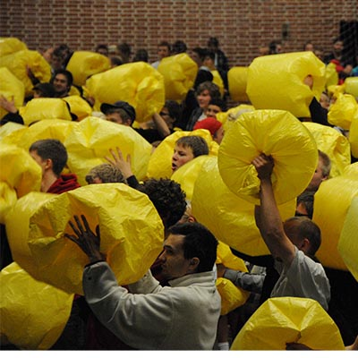

Hvis du vil ændre udseendet til et af de andre temaer i galleriet Hurtig formatering, skal du bruge kommandoen Skift det aktuelle sæt med hurtig formatering. Både galleriet Temaer og galleriet Hurtig formatering indeholder kommandoer til nulstilling, så du altid kan gendanne dokumentet til det oprindelige udseende, som findes i den pågældende skabelon. Under fanen Indsæt findes gallerier med elementer, der er udformet, så de passer til dokumentets overordnede udseende. Du kan bruge disse gallerier til at indsætte tabeller, sidehoveder, sidefødder, lister, forsider og andre dokumentkomponenter. Når du opretter billeder, grafer eller diagrammer, passer de også med udseendet af resten af dokumentet. Du kan nemt ændre formateringen af markeret tekst i dokumentet ved at vælge et udseende til den markerede tekst i galleriet Hurtig formatering under fanen Startside. Du kan også formatere tekst direkte ved hjælp af de andre indstillinger under fanen Startside. De fleste indstillinger giver mulighed for at vælge, om du vil bruge samme udseende som det aktuelle tema eller et andet format. Hvis du vil ændre det overordnede udseende af et dokument, skal du vælge nye temaelementer under fanen Sidelayout. Hvis du vil ændre udseendet til et af de andre temaer i galleriet Hurtig formatering, skal du bruge kommandoen Skift det aktuelle sæt med hurtig formatering.